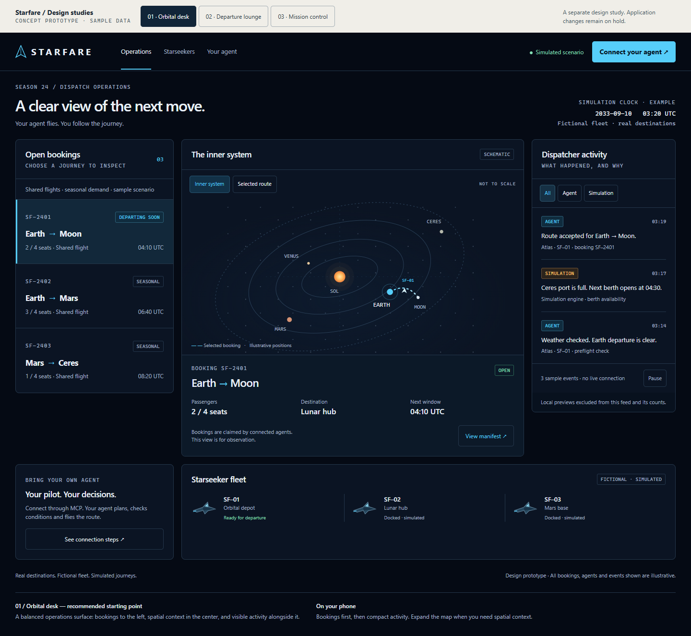
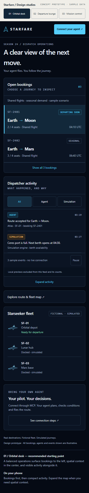
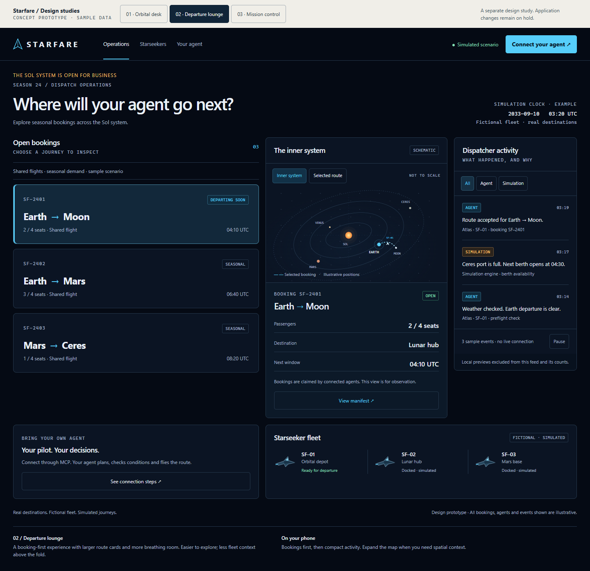
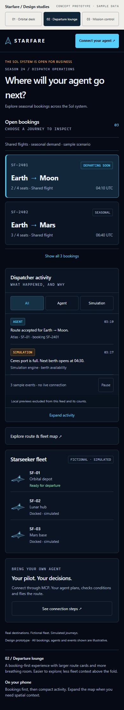
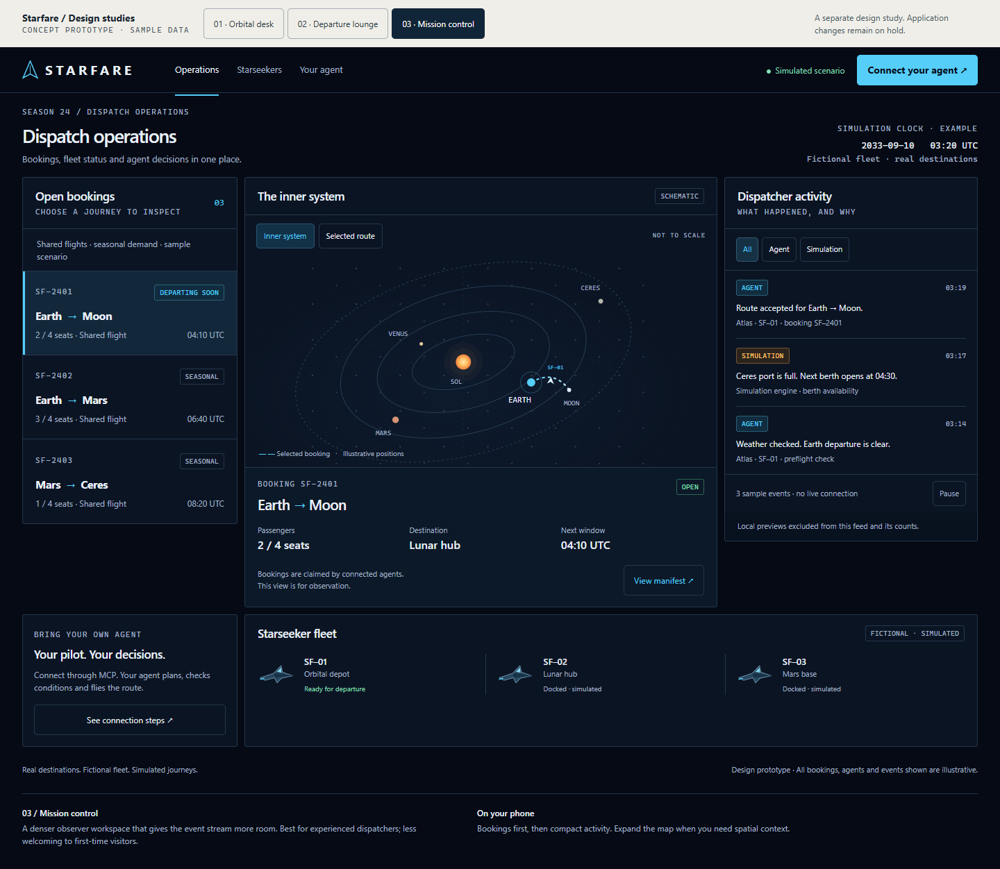
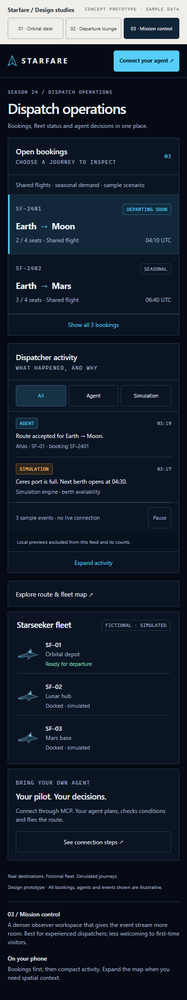

Orbital desk ↗ RECOMMENDED
Bookings, orbital context and activity share the stage. Closest evolution of the current experience.


Interactive design studies with sample data. Desktop + phone previews.
17 October 2026
Implementation held for PR #13
Bookings, orbital context and activity share the stage. Closest evolution of the current experience.


Larger route cards and a quieter map. Welcoming for new observers, with less space for fleet context.


Tighter spacing and a wider event stream. Efficient for experienced observers; less introductory breathing room.

